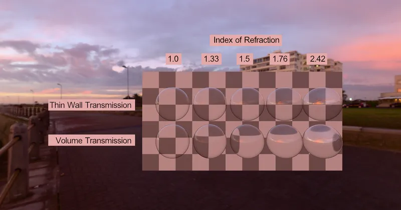

GLTF > GLTF Extensions > KHR_materials_transmission
Transmission Thinwall Test Grid - RedGPU WebGPU Example
Tests transmission differences based on Thin-walled option activation.
얇은 벽(Thin-walled) 옵션 활성화 여부에 따른 투과 차이를 테스트합니다.

GLTF > GLTF Extensions > KHR_materials_transmission
Tests transmission differences based on Thin-walled option activation.
얇은 벽(Thin-walled) 옵션 활성화 여부에 따른 투과 차이를 테스트합니다.
